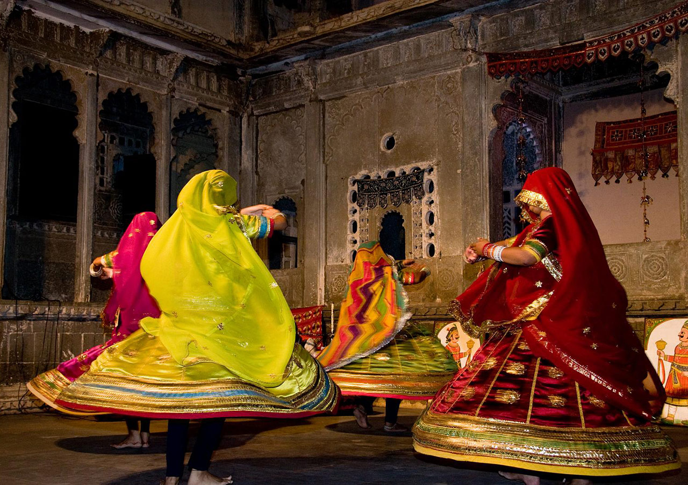
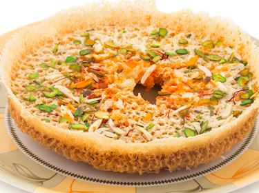

Rajasthan
Unity in Diversity

Padharo Mahare Desh

Unity in Diversity
Rajasthan, India- "Padharo Mahare Desh"
Rajasthan is a state in northern India. The state covers an area of 342,239 square kilometres or 10.4 percent of the total geographical area of India. It is the largest Indian state by area and the seventh largest by population. Some famous national parks and wildlife sanctuaries in Rajasthan include Ranthambore National Park, Kumbhalgarh Sanctuary, Sariska Tiger Reserve, Sitamata Sanctuary, Keoladeo Ghana National Par, Gajner Sanctuary, Tal Chappar Wildlife Sanctuary, Mount Abu Sanctuary, Darrah Sanctuary and Desert National Park.
Capital: Jaipur
Location: Rajasthan, state of India, located in the northwestern part of the subcontinent. It is bounded to the north and northeast by the states of Punjab and Haryana, to the east and southeast by the states of Uttar Pradesh and Madhya Pradesh, to the southwest by the state of Gujarat, and to the west and northwest by Pakistan.
BEST TIME TO VISIT RAJASTHAN: Locals and travel experts recommend the period between the months of November to February as the best time to visit Rajasthan. Summers are scorching whereas during winters, temperature come down to the bottom of the mercury level.
WHY VISIT RAJASTHAN? Rajasthan is home to a great number of wildlife in India. Some of the most famous wildlife sanctuaries worth checking out are Desert National Sanctuary, Jaisalmer, Kumbhalgarh Wildlife Sanctuary, where visitors can enjoy foot tracking and horse safaris, and National Chambal Wildlife Sanctuary, Kota.
Rajasthan attracts tourists for its historical forts, palaces, art and culture with its slogan "Padharo mhare desh", now its changed . Every third foreign tourist visiting India travels to Rajasthan as it is part of the Golden Triangle for tourists visiting India. Jaipur, the “Pink City,” and also the capital of Rajasthan, is famous for its forts and palaces, most notably Amer Fort, Hawa Mahal etc. Then there is Udaipur, with its glistening lakes like Lake Pichola, and wonders like Taj Lake Palace, besides being a haven for shoppers.
Since many rulers ruled Rajasthan, each region has its own folk culture. The folk music and dance of Rajasthan are similar due to their geographical confinement, but each differs in their unique style. Manganiyars and Langas are two prominent groups that contributed to the Rajasthan folk music. They perform 'ragas' (songs) for different purposes. Like during the pre-monsoon time, they would perform ragas to call forth the rains. Other famous groups are Banjaras, Mirasis, Jogis, and much more.
Many traditional instruments are used by them that include sarangi, kamayach, dhols, shenhai, and been. Folk songs were usually for certain purposes like weddings or birth or were passed to tell a story of bravery or a romantic tale. They were usually in the form of ballads. The dance is varied as well. Dance differed among different tribes. It was mainly for the entertainment of the people and the king. Some of the dances include chang, ghoomer, bhopa, tejali, and kathipuli. Ghoomer dance, which originated in Udaipur, has gained international recognition and appreciation.
|
Chang |

Ghoomer |

kathputli |
Manganiyars and Langas, Banjaras, Mirasis, Jogis. These groups perform ragas (songs).
|
Manganiyars |
Banjaras |
Jogis |
The women wear sarees with the 'odhni' covering their head as a sign of respect. The men wear dhotis and kurtas with a headgear called pagri or safah. The designs on their clothing are either embroidered or dotted. The material of the clothing is usually cotton and even silk for women.
Distorted Style, there are three kinds of Rajasthani paintings, Phad, Pichwai and Miniature. Phad and Pichwai are done on cloth, while miniature is done on specially treated paper in vegetable dyes.
|
Phad |
Pichwai |
Miniature |
The first Rajasthani movie was Nazrana, a Marwari film directed by G. P. Kapoor and released in 1942. Babasa Ri Ladli, produced by B. K. Adarsh, was released in 1961 and has been described as the first hit Rajasthani movie. The 1983 film Mhari Pyri Channana by producer and director Jatinkumar Agarrwal was the first Silver jubilee film in Rajasthani. Between 1987 and 1995 a number of Rajasthani films were produced, including the musical Bai Chali Sasariye from 1988, which was reported to be the only successful Rajasthani-language film production in the 1980s and 1990s. Since the mid-1990s, the number of films produced in Rajasthan has been low, for reasons including lack of promotion and poor production quality.
Film producers in Rajasthani cinema include B. K. Adarsh, Ram Raj Nahta, Bharat Nahta, Bhanu Prakash Rathi, and Ajai Chowdhary, and directors include Nawal Mathur of Jodhpur, Mohan Singh Rathor, Mohan Kataria, Ajit Singh, and Bhanu Prakash Rathi. Neelu Vaghela, Gajendra S. Shrotriya, and Jatinkumar Agarrwal have been both producers and directors. To encourage the production of Rajasthani movies, a tax holiday for cinemas in towns and cities with fewer than 100,000 inhabitants was announced in the 2008 budget of the Rajasthani Government, and the entertainment tax was lowered.
As a tourist, there are some foods that you need to try. Rajasthani food is known for its various spices and also its sweetness. Rajasthan is most famous for dalbati - A dish comprising of dal and wheat flour kneaded with yoghurt and dressed in ghee. It is also famous for kachori - the kachori in Rajasthan are of two types - sweet and spicy. The spicy kachori is called the pyaaz or onion kachori, and the sweet kachori called the mawa kachori. Both these kachoris are easily available in any food stalls in Rajasthan. Ghewar and gheriya are some delectable sweet dishes originating from Mewar, available in most restaurants at Rajasthan. Most of the Rajasthani dishes are made in ghee. More than 70% of people in Rajasthan are Lacto vegetarian making it one of the most vegetarian states in India. However, non-vegetarian dished like Lal Maas and Mohan Maas are delicacies in Rajasthani cuisine.
|
kachori |

Ghewar |

Dal Bati |
|
Gheriya |

Mohan Maas |

Lal Maas |
Rajasthan boasts of its rich heritage, culture, and scenic splendours. And the same is reflected in sparkling lakes & dessert, vibrant markets, and mesmerising palaces & forts of Rajasthan. Undeniably, equally popular are the numerous colorful and traditional festivals of Rajasthan. Some reflect ethnicity, some heritage, and some are purely cultural events. These festivals are for sure a celebration of life, heritage and culture in true Rajasthani style. It provides an opportunity to the tourists to see the different colours of the state.
|
Teej |

Pushkar Camel Fair |

Mewar Festival |

Kite Festival |

Brij Holi |

Elephant Fair |
This majestic fort is the milestone of Ranthambore National Park. It is perceived by UNESCO World Heritage Site called ‘Hill Forts of Rajasthan’. The manor is based upon a 700 ft high hill and is one of the real attractions in Ranthambore National Park.
The current population of tigers in Rajasthan is 85, including 70 in Ranthambhore, 14 in Sariska, and 1 in Mukundara Hills (the recently translocated tiger).
Sariska Tiger Reserve is a tiger reserve in Alwar district, Rajasthan, India. It stretches over an ... As of October 2018, there are 18 tigers including five cubs.
Royal Bengal Tiger, Black Buck, Chinkara, Asiatic Wildcat, etc are some of the wildlife species that can be spotted in Rajasthan. Species like bamboo, salar , dhavand jamun are found. Rare species of wild roses, ferns and orchids can also be seen here.
Sanctuaries and National Parks in Rajasthan- Rajasthan the tiger state is undoubtedly the best places to spot tigers.

Ranthambore National Park |

Sariska National Park |

Mukundara Tiger Reserve |

Jhalana Safari Park |

Sorsan Wildlife Sanctuary |

Bharatpur Bird Sanctuary |
Lakes- Rajasthan, the state where history blends with modernity, opens its arms wide and welcomes travelers from across the world. There are palaces, gardens, museums and forts in this colorful Indian state, but the lakes in Rajasthan – their charm is unmatchable. Ruins of grand palaces, enveloping Aravalli Hills, and surrounding piles of striking white salt make the lakes more beautiful. Add a dash of dazzle to your next trip to Rajasthan by visiting some of the most mesmerizing lakes in Rajasthan.

Lake Pichola- The Jewel Of Udaipur |

Sambhar Salt Lake- Largest Inland Salt Lake In India |

Pushkar Lake- Embraced By Pious Shrines |

Mansagar Lake- Where Jal Mahal Enjoys Its Isolation |

Balsamand Lake, Jodhpur- Enjoy Both Nature And Luxury |

Nakki Lake, Mount Abu- The Lake Of Love |
Hill Stations- Whether it is about escaping from the heinous heat of Rajasthan or the hectic lifestyle of the glorious state, the hill stations will always be one of your best options. Besides being a perfect place for spending some me-time, these places can also help you to indulge in numerous adventurous activities, which will enhance your overall traveling experience by a mile. Along with these, the hill stations in Rajasthan also offer a marvelous view of landscapes, which can aid you in forgetting all your stress. So, if you want to get away from the busy life of Rajasthan and wish to rejuvenate yourself, then make sure to visit the following hill stations.

Mount Abu |
Sajjangarh |
Ranakpur |
Deserts- With most of the Great Thar Desert in Rajasthan, one is never at a dearth of places to enjoy the magnificence and glory of the deserts in Rajasthan.

Thar Desert- “The Great Indian Desert” |

Camel Safari- Jodhpur |

Sand Dune Village- Khimsar |

Mahabar Sand Dunes- Barmer |

JCR Desert Safari camp- Jaisalmer |

Explore Golden City- Dhibba Para |
In the State copper deposits are located in the districts of Jhunhunu, Sikar, Sirohi, Udaipur, Bhilwara, Ajmer, Alwar, Bharatpur, Chittorgarh, Rajsamand and Dungarpur. With resources of 809.09 million tonnes, the State possesses substantial share of 54% of the total resources of country. The State is the second leading producer of copper concentrate contributing 41% of the nation’s output.
A total of 118.88 million tonnes of Gold ore resources were estimated in the State including 105.81 million tonnes resources of Bhukhia-Jagpura-Delwarabelt (Banswara) with 0.50gm/t cut-off grade. Gold was also proved along with Copper in Dhani-Basri area of Dausa district, Khera-Mundiawas area of Alwar district and Dokan area of Sikar district. Beside above, gold is also extracted as by product in Khetri Copper-Belt (district Jhunjhunu).
The Iron-Ore Deposits are located in the district of Jaipur, Udaipur, Jhunjhunu, Sikar, Bhilwara, Alwar, Bharatpur, Dausa and Banswara. About 2621 million tones resources of Iron–Ore (Both Hematite & Magnetite) are estimated in the State. The important localities of Iron-Ore are Morija- Neemala (Jaipur), Lalsot (Dausa), Rampura, Dabla (Sikar), Taonda (Jhunjhunu), Pur-Banera, Bigod (Bhilwara), Nathara-Ki-Pal, Thur (Udaipur), Indergarh, Mohanpura (Bundi), Dedrauli, Liloti, Todupura, Khora (Karauli).
Rajasthan is endowed with the largest lead-zinc ore deposit having resources of 629.92 million tonnes. The important lead-zinc-silver deposits in the State are located at Zawar (Udaipur), Rajpura-Dariba-Bethumi, Sindesar Kalan-Sindesar Khurd (Rajsamand), Rampura-Agucha and Pur-Banera (Bhilwara), Dehri (Sirohi) and Kayer–Ghugra, Sawar (Ajmer). The Country enjoys self-sufficiency in respect of Zinc.
In Rajasthan Manganese deposits mainly occurs in the districts of Banswara where it is confined to a belt extending from Guraria to Rathimuri over a distance of 22 Km. The main deposits are located at Sivania, Kala-Khunta, Ghatia, Lilwani, Itala, Tambeshra and Kheria. Small deposits of manganese are also located near village Negadia (Rajsamand), Choti-Sar, Badi-Sar (Udaipur). A total of 5.78 million tonnes resources of Manganese have been estimated in the State.
Tungsten is a metal of strategic importance. The chief source of Tungsten are wolframite [(Fe,Mn,)WO4], and scheelite (CaWO4). The State has about 23.92 million tonnes resources of tungsten ore which is about 27% of total country’s resources. Important deposits occur near Degana, district Nagaur & near Balda and Uduwaria, district Sirohi. Degana & Balda were the only operative mines producing meager quantities of concentrate. However, owing to economic non viability they have been closed down.
The greater part of Rajasthan falls under Hot Desert and remaining portions of the state falls under Hot Semi Arid; the climate of the state ranges from arid to semi-arid. Rajasthan receives low and variable rainfalls and thereby is prone to droughts.
| Temperature | ||
|---|---|---|
|
|
|
|
Rajasthan depends majorly on income earned via tourism. Thus most of the people have learned English or Hindi or perhaps both to be able to communicate the travellers. However, some dialects originating from Rajasthan include Marwari, Malvi, Mevati, Jaipuri/Dhundari of which the most famous is Marwari.

One of the most visited states in India is Rajasthan which is well-known for its rich culture, royal palaces, lofty forts and glorious history. Being a stronghold of the Rajput culture, Rajasthan is a great place to unravel the mysteries of past times when great Rajput warriors used to rule these lands. Include these places to visit in Rajasthan to create the best itinerary possible.

Jaipur |

Udaipur |
Jodhpur |

Jaisalmer |
Bikaner |
Pushkar |
|
Ajmer |

Chittorgarh |
Alwar |
|
Kota |
Neemrana |
Ranakpur |
Rajasthan is known for its historical hill forts & palaces, it is claimed as the best place for tourism-related to palaces. Umaid Bhawan Palace: It is the largest Royal Palace in Rajasthan. It is also one of the largest private residences in the world.

Chittorgarh Fort |

Ranthambore Fort |

Jaisalmer Fort |

Amber Fort |

Jantar Mantar |

Hawa Mahal |

Sheesh Mahal |

The City Palace |

Umaid Bhawan Palace |

Dargah Sharif |

Jal Mahal |

Vijay Mandir Palace |